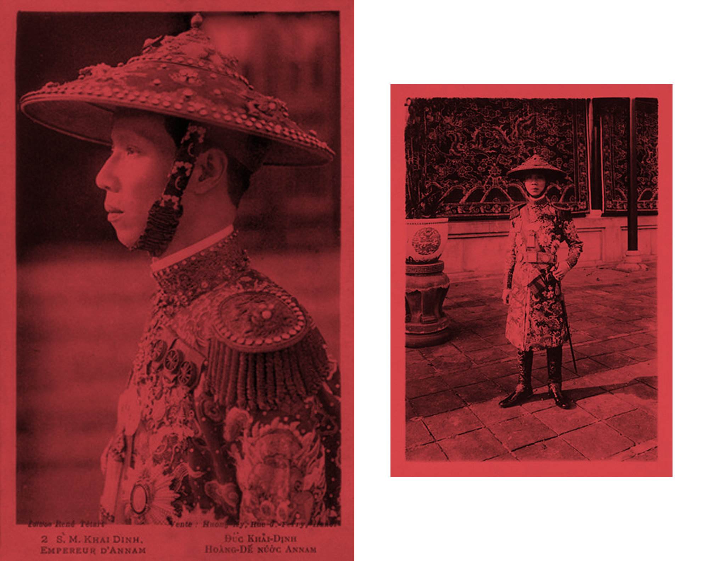
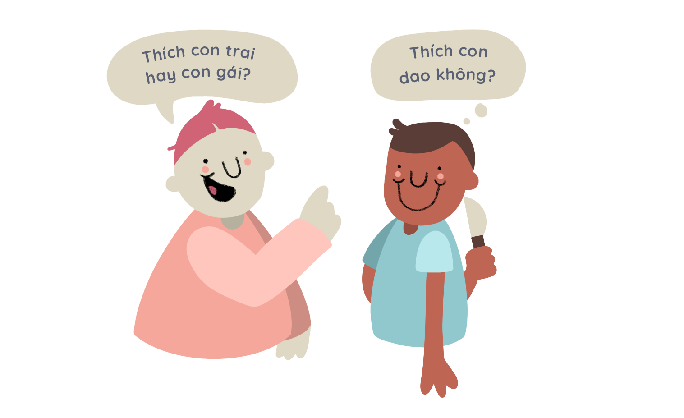

Sexuality
Chapter 01
Having a dialogue in and about the queer community is something that is very new in Vietnam. Until recently, topics regarding the LGBTQ community were still considered taboo or very uncomfortable to talk about. The media has slowly started being more open by including or promoting news about LGBTQ issues. To help both the older and younger generation navigate through these conversations, Chapter 01 is written to provide everyone with some basic knowledge about the LGBTQ community.
Table of Contents
Click to navigate
Sexual
Orientation
Heterosexuality
Dị Tính
Heterosexuality is the word used to describe a person’s attraction to the opposite sex. The majority of the world’s population is heterosexual and cisgender (i.e. the person’s gender matches the sex that they were assigned at birth). Due to the fact that this majority is not discriminated against, heterosexual and cisgender people should use their platform to protect sexual minorities and marginalized groups.
Homosexuality
Đồng Tính
Homosexuality is the word used to describe a person’s attraction to the same sex; homosexuality is often sub-categorized into gay (males) or lesbian (females). Neither is homosexuality a mental illness, nor is it contagious. Therefore, it cannot be cured. Many scientific research papers have shown that trying to change someone’s sexual orientation does not work, and can cause serious mental harm. It is submitted, in recent years, queer people in Vietnam have become a more visible part of Vietnamese society; this is because society is starting to be more open about LGBTQIA+ issues, giving queer people a degree of confidence to be “out and proud”.
King Khải Định (1885-1925)
A historical case of queer identity is that of King Khải Định. Documents have shown that King Khải Định preferred men over women even though he had twelve wives. People used to believe he was infertile; Prince Vĩnh Thuỵ, his only son and the successor to the throne, was said to be adopted. King Khai Định was also often criticized for the way he dressed, full of jewelry and colorful garments.
Bisexual
Song Tính
Bisexuality describes the attraction to both male and female-identifying individuals. Just like homosexuality and heterosexuality, bisexuality is a natural sexual orientation, not a mental illness. What many people fail to understand, however, is that bisexual people are not attracted to everyone in the world, they just have no (sexual) preference as to whether their potential partners are men or women.
A lot of people have argued that, on the basis of their bisexuality, they should choose to have a family with someone of the oopposite sex in order to avoid discrimination. However, if you merely “love” someone to avoid social prejudice, then that relationship won’t last long since it is not based on true feelings.
Queer
Queer
The word “queer” is an umbrella term encompassing all sexual orientations and gender identities of anyone who is not heterosexual and cisgender. Many people realize that they are not heterosexual, but also do not fit into any categories or “boxes” described above. Therefore, the term “queer” serves those who do not wish to limit themselves by adhering to more rigid definitions such as “gay” or “transgender”. Due to this definition’s inclusive nature, more and more people are interested in identifying themselves as queer rather than using other labels.
Asexual
Vô Tính
Asexual people experience little to no sexual attraction. They can still have an emotional connection with someone, but they do not find sex as such appealing. Asexual people can still date, love, marry, and have kids - while not feeling any sexual attraction towards their partner.
Genders
Male
Nam
Female
Nữ
Transgender
Chuyển Giới
Transgender people are people whose gender identities are different from the sex they were assigned at birth. A transgender person may biologicaly be male, but psychologically identify as female. Just like homosexuality or bisexuality, transgender is not a sexual “disability”.
While homosexuality answers the question “Who do you love?”, transgender answers the question “Who are you?”. These two categories are two different concepts; one relates to sexual orientation, the other relates to gender identity. In a relationship, most transgender people are attracted to people of the opposite sex. However, some transgender people may also be gay or bisexual.
All (transgender) people want to be addressed with the proper pronouns. For instance, people identifying as female although they were born as males, they would want to be addressed as “she/her”. If you are unsure about which pronouns to use, the easiest way is to ask what they want to be called.
Transgender people do not necessarily have to undergo surgery to be considered transgender. Not everyone has the financial means, health insurance or sense of urgency to undergo such serious surgeries. Some transgender men transition only by removing their breasts, and some transition into a woman only with breast augmentation. In 2017, Vietnam first allowed transgender people to change their gender legally without undergoing surgery. Before that, only intersex people could legally change their gender.
Non-binary
Phi Giới Tính
Most people, including transgender people, identify as “male” or “female”. However, some people feel like they are neither a man nor a woman, and some people identify as both. They are described as “non-binary”; these people people do not necessarily have to have a masculine or feminine appearance. A few examples of celebrities who identify as non-binary are Tilda Swinton, Ruby Rose, and Amanda Stenberg.
Tilda Swinton and Ruby Rose
Intersex
Liên Giới Tính
Intersex people are those born with atypical physiological characteristics. For example, an intersexual person may be born with genitalia that cannot properly be classified as male or female. Intersex babies are usually born healthy, so genitalia assignment surgeries are unnecessarily (yet, regrettably, often undertaken). Surgical intervention for sexual assignment should only happen when the child is mature and aware of who they are/want to be.
Words To Avoid

Many people make the mistake of using the wrong words to describe queer people. Many terms are out-dated and should not be used as they can be derogatory and/or hurt queer people.
Words to avoid:
- Bị/bệnh đồng tính
-Homosexuality is not an illness - Bê đê
-Common colloquialism often used in a demeaning way - Bóng/bóng lộ
- Ô Môi
- Trai không ra trai, gái không ra gái
- Hi fi
Questions to avoid:
- "Are you gay?"
-If you think someone is queer, you should think very carefully before asking this question. There will be many people who do not feel comfortable about sharing their sexual orientation, and questions like this one may or will feel like an attack. Coming out is one of the most important step queer people go through, so they should be the ones to decide when and how to do it.  - "Who is the man, who is the woman in this relationship?"
-What a ridiculous question?! A relationship between two gay men will of course not have a woman in it. Even in heterosexual relationships, a relationship does not need to have a masculine and a feminine person. Asking this question will inevitably inform people of your stereotypical gender role perceptions. Gender identity and sexual orientation should not be put into boxes according to traditional societal norms. - "If you have not dated a straight person how do you know you are gay?"
-This question is pointless on so many levels. There is only one question to be asked: If a straight person got asked this question, what would their answer be?
Symbolic Flags
LGBTQ
LGBTQ
Bisexual
Song Tính
Transgender
Chuyển Giới
Queer
Queer
Nonbinary
Phi Giới Tính
Gender Fluid
Linh Hoạt Tính
Pansexual
Toàn Tính
Asexual
Vô Tính
Intersex
Liên Giới Tính